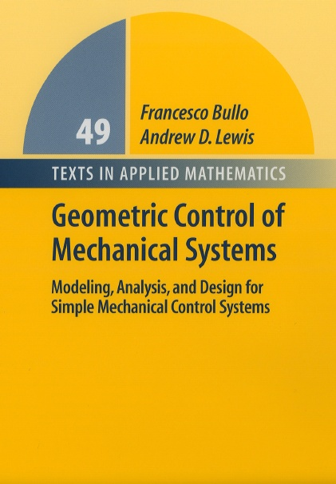

|  |
Geometric Control of Mechanical SystemsFrancesco Bullo and Andrew D. Lewis
Springer-Verlag, New York-Heidelberg-Berlin, 2004
@Book{FB-ADL:04,
author = {Francesco Bullo and Andrew D. Lewis},
title = {Geometric Control of Mechanical Systems},
publisher = {Springer Verlag},
address = {New York-Heidelberg-Berlin},
year = 2004,
volume = 49,
series = {Texts in Applied Mathematics},
isbn = {0-387-22195-6}
}
|
[Synopsis]
[Reviews]
[Free downloads]
[For instructors]
[Mathematica packages]
[CDC workshop]
[About the authors]
[Contact]
[How to buy the book]
Synopsis
From the back cover: The primary emphasis of this book is the
modeling, analysis, and control of mechanical systems. The methods and
results presented can be applied to a large class of mechanical control
systems, including applications in robotics, autonomous vehicle control, and
multi-body systems. The book is unique in that it presents a unified, rather
than an inclusive, treatment of control theory for mechanical systems. A
distinctive feature of the presentation is its reliance on techniques from
differential and Riemannian geometry.
The book contains extensive examples and exercises, and will be suitable for a growing number of courses in this area. It begins with the detailed mathematical background, proceeding through innovative approaches to physical modeling, analysis, and design techniques. Numerous examples illustrate the proposed methods and results, while the many exercises test basic knowledge and introduce topics not covered in the main body of the text.
The audience of this book consists of two groups. The first group is
comprised of graduate students in engineering or mathematical sciences who
wish to learn the basics of geometric mechanics, nonlinear control theory,
and control theory for mechanical systems. Readers will be able to
immediately begin exploring the research literature on these subjects. The
second group consists of researchers in mechanics and control
theory. Nonlinear control theoreticians will find explicit links between
concepts in geometric mechanics and nonlinear control theory. Researchers
in mechanics will find an overview of topics in control theory that have
relevance to mechanics.
Reviews
| Francesco Bullo received the Laurea degree ``summa cum laude'' in Electrical Engineering from the University of Padova, Italy, in 1994, and the Ph.D. degree in Control and Dynamical Systems from the California Institute of Technology in 1999. From 1998-2004 he was an Assistant Professor with the Coordinated Science Laboratory at the University of Illinois at Urbana-Champaign. He is currently an Associate Professor with the Mechanical & Environmental Engineering Department at the University of California, Santa Barbara. His research interests include motion planning and coordination for autonomous vehicles, and geometric control of mechanical systems. |
|
|
Andrew Lewis received his undergraduate degree in Mechanical Engineering from the University of New Brunswick in 1987, and his MSc and PhD in 1988 and 1995, respectively, both in Applied Mechanics from the California Institute of Technology. From 1995-1996 he was a Postdoctoral Fellow in Control and Dynamical Systems at the California Institute of Technology, and from 1996-1998 he was a Postdoctoral Fellow in the Mathematics Department at the University of Warwick. He is now an Associate Professor in the Mathematics and Statistics Department at Queen's University in Kingston, Ontario in Canada. His research interests include geometric mechanics and differential geometric control theory. |
Send us email: